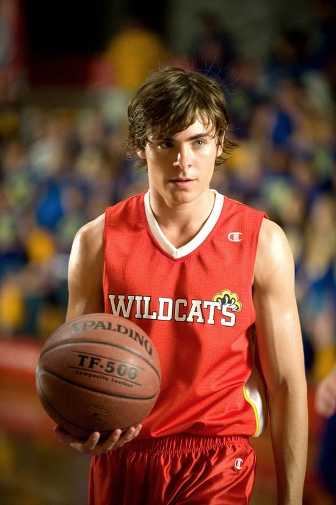

Wszystko zaczęło się od 2006 roku
Pamiętam ten dzień, była to mroźna styczniowa zima i moje początki poznawania miłości.
W tym filmie jest tego pełno, można go nazwać współczesną adaptacją Romeo i Julii
P.S. oczywiście bez śmierci
Gabriella Montez |
Troy Bolton |
|  |
Fabuła jest stosunkowo prosta, ale takie jest jej piękno
Na początku poznajemy Troya, przystojnego szkolnego sportowca
Zaraz po poznajemy Gabrielle, dziewczynę, którą mało kto zna
Ich sama miłość jest prawdziwym mezaliansem
Szara myszka i gwiazda szkoły?
Brzmi niespotykanie i ciekawie
Przykładem może być np ta, moja ulubiona